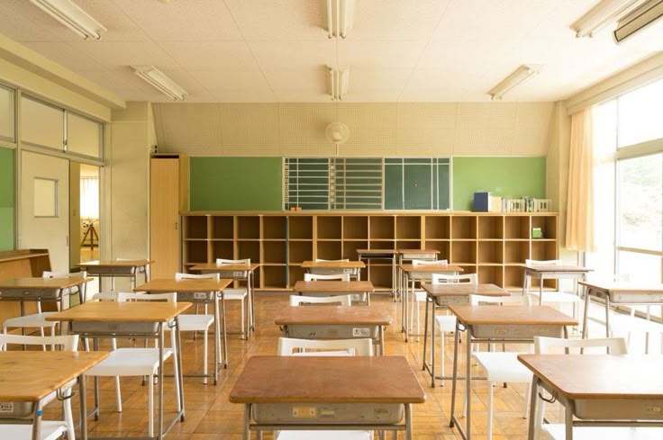

Selamat datang di Website Resmi Kelas Kami! Website sederhana ini dibuat untuk menampilkan berbagai informasi penting mengenai kegiatan kelas, jadwal piket kebersihan, jadwal pelajaran harian, serta struktur organisasi kelas.
Silakan gunakan menu navigasi di atas untuk berpindah antar bagian informasi